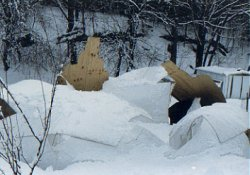
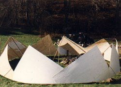
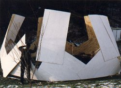
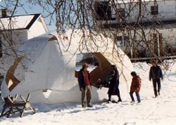

 |
24' Plydome |
| In the winter of 1986-87 I had the opportunity to build a woodshed for some friends of mine in East Montpelier, VT. My earlier constructions of 18' diameter plydomes (1/2 and 3/4 spheres) in 1981 had given me confidence in the method. This 24' dome was a faithful copy of one I saw in The Dymaxion World of Buckminster Fuller. It is a 2v hemisphere. A short time after the the plywood parts were all assembled, 10" of wet snow fell on the dome with disastrous results. |
|  |  |  |